Maven. 15. Packaging type war
Разберёмся с packaging type war. Чтобы создать java web-приложение есть два варианта: создать сразу
веб приложение или создать из нашего обычного приложения (как сейчас), т.е. трансформировать его. Начнём с
первого варианта.
Создадим сразу веб приложение через file->new project->maven
Важно: такой первый вариант лучше не делать. Поэтому примера не будет.
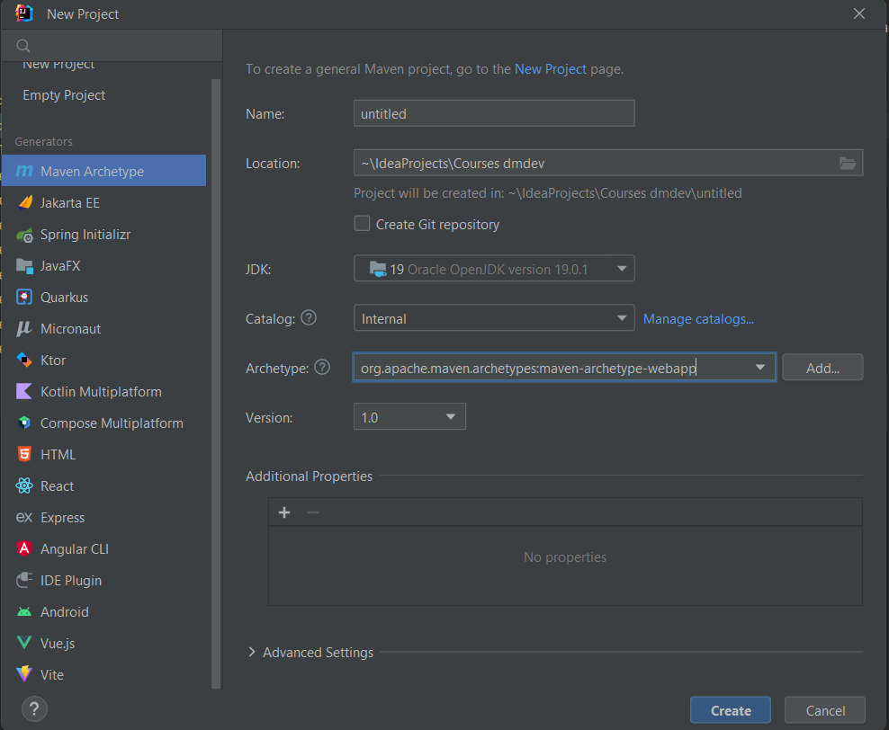
Создадим веб приложение из уже существующего
Для того создать веб приложение из уже существующего заходим в настройки приложения, а именно Modules и создаём
новый модуль web:
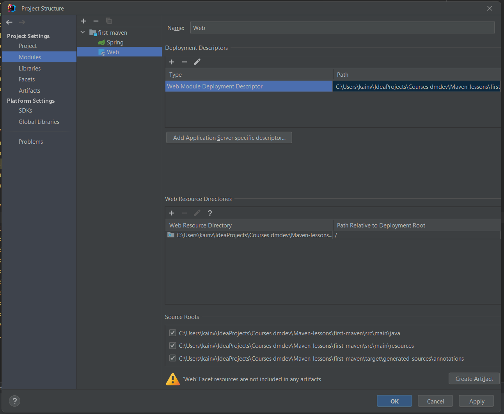
Видим соответсвующую директорию рядом с директорией src:
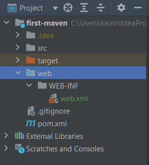
Теперь, чтобы проект соблюдал Apache Maven структуру - переносим директорию web в директорию main. Далее,
директория web в maven должна называться директорией webapp, поэтому переименовываем её.
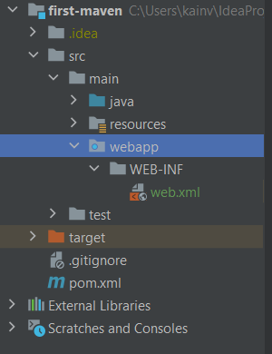
Далее, в POM устанавливаем war для packaging type:
<packaging>war</packaging>
Поправляем директорию для веб-ресурсов:
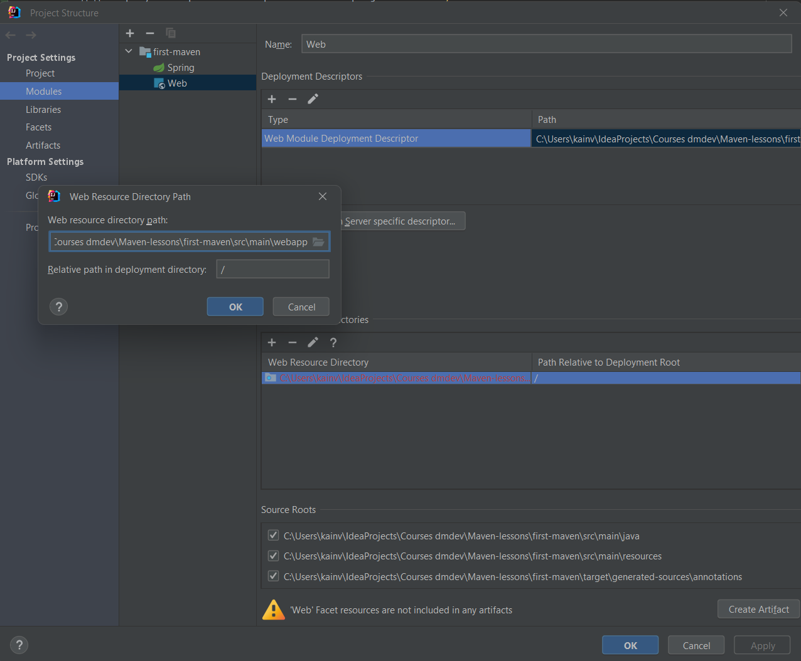
И создадим артифкаты:
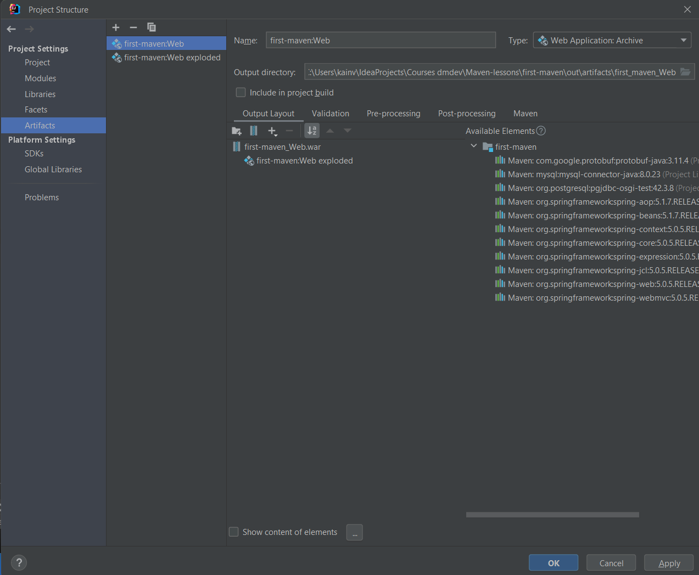
Теперь попробуем собрать через mvn package. Получим готовую директорию target:
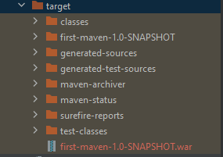
Следует помнить, что зависимости не подтягиваются!
Так же можем поменять название, чтобы название при упаковке было другое. Для этого воспользуемся специальным
тегом <finalName></finalName>, который должен быть в разделе build. Дадим название ROOT
потому что именно это название характерно для веб-приложений у которых пустой context-path:
<build>
<!-- Результат упаковки будет называться как ROOT. См. Maven 15 -->
<finalName>ROOT</finalName>
</build>
Теперь, после упаковки результат target будет такой:
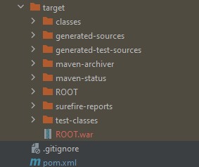
Maven. 14. Default Lifecycle. Package phase
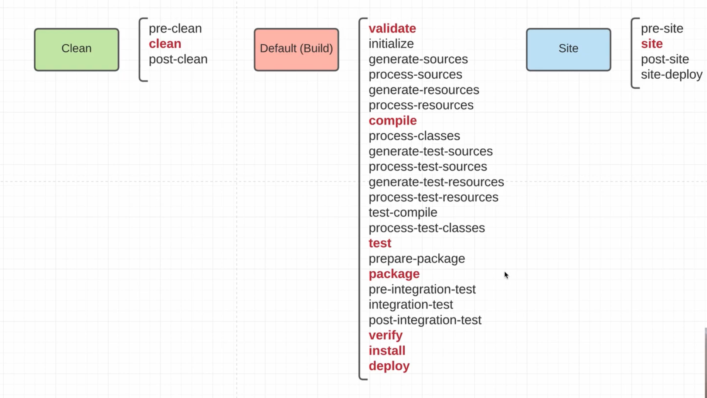
Между test и package есть prepare-package. Она никак не связана с goal'ами и служит для того, чтобы мы
могли как-то привязать свои плагины и goal'ы к этой фазе или что-то изменить для фазы package. В самой фазе
package происходит упаковка проекта в архив. Обычно это .jar архив, но может быть и .war и много другие.
Вызовем mvn package и получим следующую информацию:
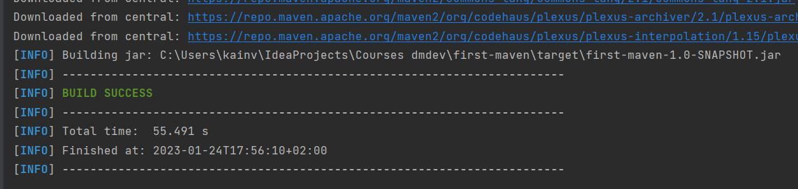
После того, как прошел весь цикл до test - увидели ещё один плагин maven-jar-plugin:2.4:jar (на скрине
его нет, но на самом деле он есть), который сформировал .jar файл и засунул в директорию
target\first-maven-1.0-SNAPSHOT.jar. Следовательно, он туда упаковал все наши исходники и назвал
по имени проекта, версии и packaging-type:
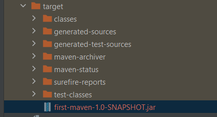
Важный нюанс: .jar которая сформировалась не включает в себя зависимости. Т.е. все зависимости, которые
указали в POM - они не будут внутри jar. Следовательно, она т.н. не executable. Не сможем использовать для
запуска приложения. Поэтому есть два варианта:
-
Создать executable-jar - для этого придется познакомиться с определенным плагином.
-
Создать структуру приложения наподобие maven или tomcat, где у нас есть собственно проект .jar и отдельно
директория lib, где собраны зависимости и в CLASSPATH при вызове нашей .jar указана директория, где эти
lib лежат для того чтобы могли работать с нашим приложением.
По умолчанию все наши POMки используют этот (.jar) packaging-type если мы его не переопределим. Т.е.
есть специальный тег <packaging></packaging>, который по умолчанию jar. Он может быть ещё
war, pom, bundle, maven-plugin (если хотим создать мавен плагин) и т.д..
<groupId>com.kainv</groupId>
<artifactId>first-maven</artifactId>
<version>1.0-SNAPSHOT</version>
<packaging>jar</packaging>
Это очень важный нюанс, потому что packaging-type полностью меняет все наши goal'ы, которые
привязываются к нашим фазам. Какие goal'ы вызываются на какой конкретно фазе - все зависит от packaging-type.
Обратимся к документации
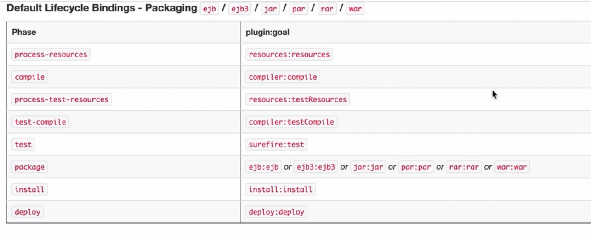
Именно дефолтный lifecycle и следующие packaging-type (ejb, ejb3, jar, par, rar, war) запускается всё тоже
самое,
что уже прошли.
Но если поменяем packaging-type к примеру на ear, то goal'ы привязанные к фазам уже отличаются. Уже видим, что
нет фазы compile, поскольку никакие goal'ы к ней не привязаны, но за то привязаны другие к фазам.
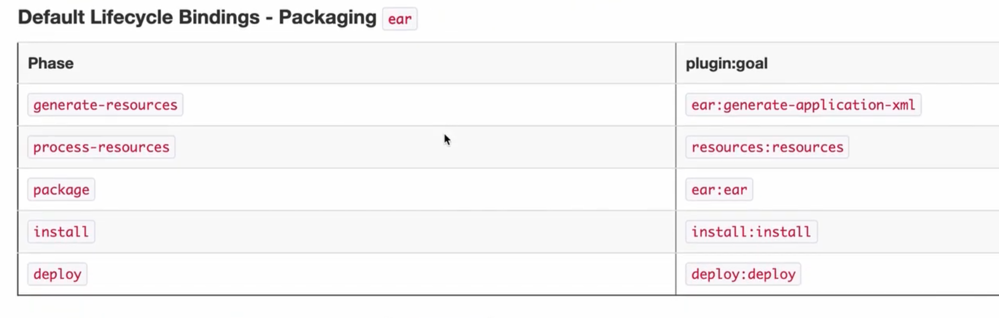
Здесь видим plugin:descriptor, который формирует какой-то файл-дескриптор плагина и добавляет его в
папку resources в наших исходниках. На фазе package дополнительно вызывает плагин для, который собирает
метаданные для нашего плагина.
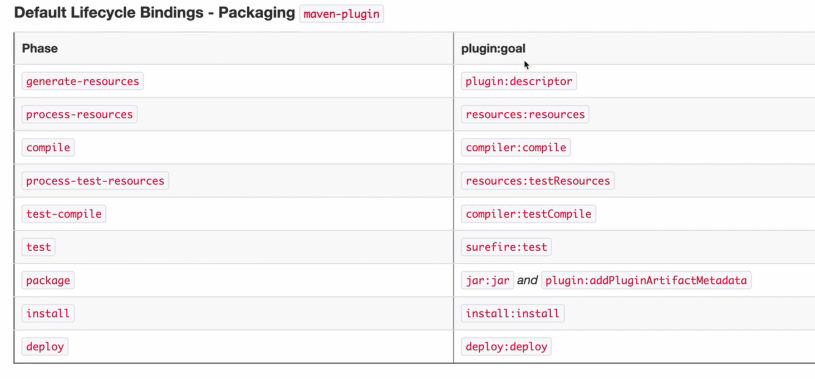
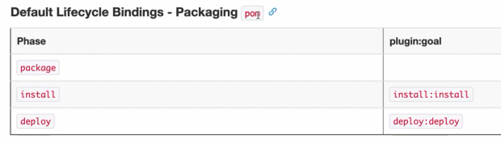
Maven. 13. Default Lifecycle. Test phase. Surefire plugin
На этапе test есть три фазы, к которым по умолчанию привязаны goal:
-
process-test-resources - аналогия с process-resources, но для тестовых файлов.
-
test-compile - для того чтобы скомпилировать все наши классы из src/main/test.
-
test - для запусков наших тестов.
Все остальные фазы не содержат никаких goal по умолчанию, но можем в любое время подключить любой goal любого
плагина.
-
process-classes - нужен для того, чтобы выполнить какую-ту обработку классов, которые скомпилировали
на предыдущей фазе.
-
generate-test-sources - хотим сгенерировать какие-то дополнительные исходники для тестов.
-
process-test-sources - обработать их.
-
generate-test-resources - сгенерировать тестовые ресурсы (статику) и подложить в директорию
resources.
-
process-test-resources - берёт из этой директории и кладёт в директорию target. Дополнительно
можно отфильтровать, указать переменные и прочее.
Введя mvn test в директории target получим папку test-classes в которой будут лежать
скомпилированные
классы из src/test.
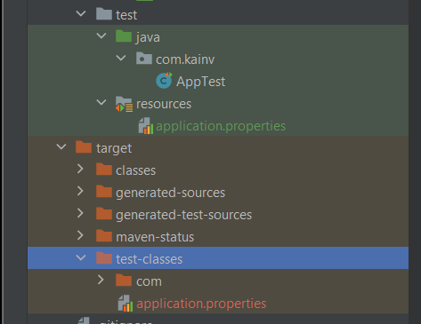
Maven. 12. Default Lifecycle. Validate and Compile phases
validate
validate по сути только валидирует проект на корректность. На то, все ли правильно заполнено в POM'ках и по сути
не вызывает ничего. Нет никаких goal связанных с этой фазой.
initialize
На фазе initialize по дефолту ничего не происходит, но она насчитана на то, что мы можем привязать свой
плагин и установить какие-то дополнительные пропертисы либо создать директории. Т.е. что-то дополнительное для
инициализации проекта.
generate-sources
generate-sources - на этой фазе также можем привязать какой-то плагин потому что по дефолту нет ничего
связанное с этой фазой и она рассчитана на то, что мы хотим сгенерировать какие-то исходники. Обычно есть
какие-то генераторы типа "Querydsl" которые создают дополнительно java-классы на этой фазе. Эта фаза
будет использоваться далее в Hibernate.
process-sources
Обрабатываем все наши исходники. Можем фильтровать их и поставить переменные в них.
generate-resources
Аналог generate-sources, но генерирует ресурсные файлы из директории .m2/resources.
process-resources
Фаза, на которой привязана первая goal из плагина resources. Обрабатывает ресурсные файлы. Т.е. берёт директорию
target и кладёт туда все ресурсы из папки main resources. Дополнительно может отфильтровать их и поставить
значения.
Так же как и в process-sources, только для статических файлов из директории resources.
compile
Для того чтобы вызвать compile, нам необходимо пройти все предыдущие фазы до compile. Потому что так работает
maven. Если хотим в каком-то из нижнего цикле вызвать какую-либо фазу, то вызываются все предыдущие фазы в том
же самом жизненном цикле.
Привязан compiler плагин и его goal compile. Он всего лишь компилирует наши исходники из main/src директории
и кладёт их в директорию target/classes.
Выполним mvn compile увидим:
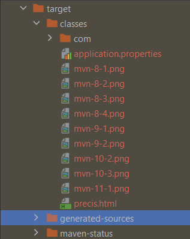
Мы так же можем переопределять плагины и перенастраивать их
<build>
<plugins>
<plugin>
<groupId>org.apache.maven.plugins</groupId>
<artifactId>maven-compiler-plugin</artifactId>
<version>3.8.0</version>
<!-- Конфигурируем плагин-->
<configuration>
<!-- Устанавливаем версию исходников -->
<source>15</source>
<!-- И компилируем в 19 версию java. По умолчанию 1.7-->
<!-- Теперь после билда мавена можно в плагин классах можно использовать фичи 19й java-->
<target>19</target>
</configuration>
</plugin>
</plugins>
</build>
Maven. 11. Project Lifecycles. Clean Lifecycle
Жизненный цикл проекта - это основной аспект в maven, который позволяет полностью управлять жизнедеятельностью
проекта начиная от написания заканчивая деплоем в продакшн.
Project lifecycle (жизненный цикл проекта) - это набор фаз (phase), которые следуют по очереди
друг за другом.
Phase (фаза) - один из этапом project lifecycle, который состоит из целей (goal).
Если брать пример из жизни, то project lifecycle - это сутки, а phase - всего лишь обозначение какой-то части
в этих сутках: утро, день, вечер, ночь. Если зайдём в код, то phase - это всего лишь enum с перечнем всех
возможных фаз, которые есть в maven.
В maven существует три жизненных цикла: Clean,
Default (Build), Site. У каждого из этих
lifecycle есть набор фаз, которые следуют друг за другом по очереди (см. картинку, основные фазы подчеркнуты
красным цветом).
Default (Build) является главным из всех жизненных циклов потому что он
содержит гораздо больше фаз. В нём основные фазы это:
-
validate - валидирует все POM в проекте.
-
compile - занимается компиляцией нашего проекта, именно sources, которые лежат в main.
-
test - запускает тесты, юнит-тесты для проверки исходных кодов.
-
package - занимается упаковкой проектов в соответствующий artifact.
-
verify - запуск уже интеграционных тестов на основании того, что упаковали. Т.е. у наших jar есть
ещё интеграционные тесты, для того чтобы проверить собранный artifact.
-
install - фаза, которая занимается копированием artifact'ов с фазы package в локальный .m2
репозиторий.
-
deploy - занимается тем, что берёт из директории .m2/repository и пушит их в удалённый.
Главный момент: с каждой фазой связана цель либо несколько целей, но так же может быть и не связано
ни одной.
В случае нашего жизненного цикла Default (Build) набор этих целей
напрямую зависит от того, во что мы собираем наш проект. Т.е от настройки package. Нет прямого соответствия
между фазами и целями потому что перечень целей может быть отличным от того, во что собираем наш проект.
Фаза site в lifecycle Site занимается генерацией различных отчётов,
репортов. Например, генерирует документацию по исходным файлам. Либо сгенерируется отчёт по тестам, которые
прошли и т.д..
В случае lifecycle Clean - это самый простой жизненный цикл проекта, где мы просто
чистим директорию target.
Есть два варианта вызова фазы: mvn <plugin>:<goal> & mvn <название фазы>.
Maven. 10. Transitive dependencies
Транзитивная зависимость - это когда одна библиотека зависит от другой. Если подключаем зависимость, которая в
свою очередь зависит от другой, то та другая так же неявно подтягивается. Как в примере из Maven 8.
Как maven определяет транзитивные зависимости и подкачивает их вместе с основной зависимостью?

Как видели в maven 8, в подтянутой зависимости есть разного расширения файлы. Для определения транзитивной
зависимости maven используем файл с расширением .pom, поэтому он её и выкачивает.
Важно помнить, что maven выгружает вместе с основной .jar ещё и .pom.
Нюансы с транзитивной зависимостью
Например, подключим пару зависимостей от Spring:
<dependency>
<groupId>.springframework</groupId>
<artifactId>spring-webmvc</artifactId>
<version>5.0.5.RELEASE</version>
</dependency>
<dependency>
<groupId>org.springframework</groupId>
<artifactId>spring-aop</artifactId>
<version>5.1.7.RELEASE</version>
</dependency>
Дело в том, что зависимости Spring тянут дополнительно ещё много транзитивных зависимостей и проблема начинается
тогда, когда транзитивные зависимости не совпадают по версии с другими транзитивными зависимостями: точно такими
же по groupId & artifactId, но версия другая. Это чревато большими последствиями, когда есть проблема
несовместимости версий.
Зайдём в терминал и выполним команду, но с дополнительным флагом mvn dependency:tree -Dverbose.
В этом случае получим более подробную картину происходящего:
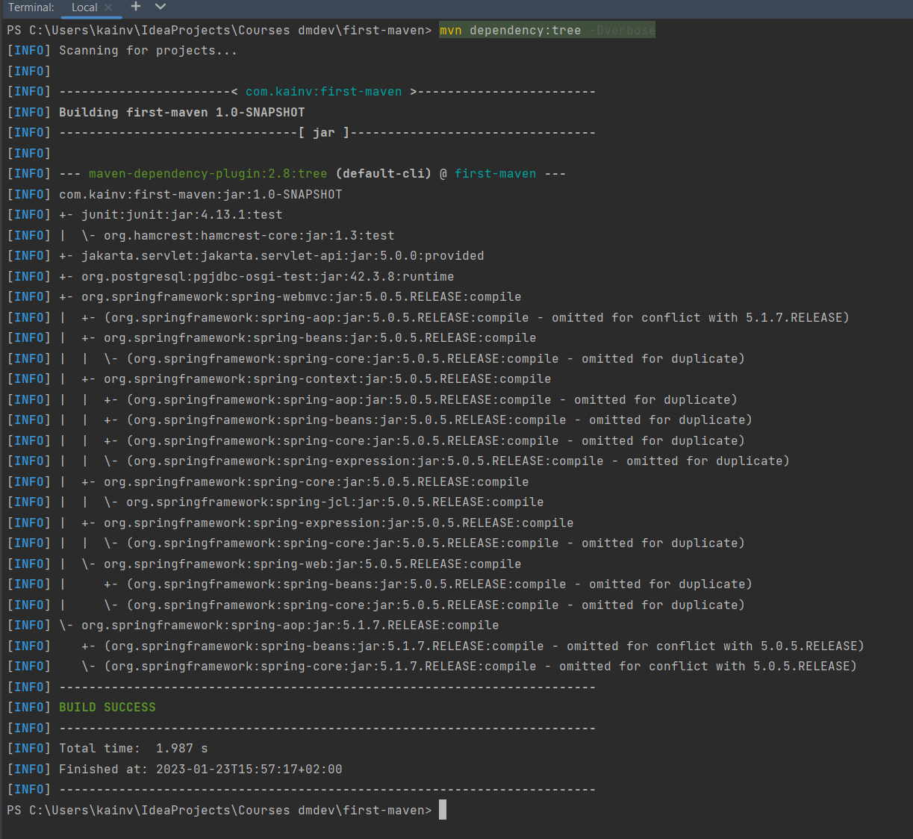
Видим две зависимости спринга и в некоторых из них зависимости помечены как omitted from ..... Т.е.
таким образом maven решает проблемы транзитивной зависимости, а точнее конфликты этих версий. Другими словами
говоря, он просто опускает некоторые зависимости и передаёт зависимости из другой .jar. Например, в случае
нашего spring-aop мы видим, что он опустил .jar'ку spring-beans версии 5.1.7 и взял 5.0.5 потому
что у нас она есть в другой зависимости - spring-webmvc. Все потому что если посмотреть на зависимости,
то webmvc идёт до того, как показали AOP.
Следовательно, первый нюанс в зависимостях maven - это то, что транзитивные зависимости перекрывают
другие транзитивные зависимости если главная зависимость идёт выше в нашем конфигурационном файле.
Поэтому, в данном случае spring-webmvc выигрывает, чем spring-aop. Поэтому spring-aop взял
более старую версию. Это на самом деле плохо, потому что в таком случае скорее всего будет ошибка во время
компиляции или выполнения. Это не очень хороший вариант решения, который придумал maven. В Gradle всегда берётся
более старшая версия какой бы порядок не соблюдали.
Второй вариант решения данной проблемы - это использование специального тега
<exclusions></exclusions>. В нём можем перечислить несколько зависимостей, которые хотим
исключить из нашей основной зависимости. Т.е. какие транзитивные зависимости не должны попасть к нам вместе
со spring-webmvc.
Отключим в spring-webmvc зависимость spring-beans для того чтобы взяли spring-beans из
spring-aop:
<dependency>
<groupId>.springframework</groupId>
<artifactId>spring-webmvc</artifactId>
<version>5.0.5.RELEASE</version>
<exclusions>
<exclusion>
<groupId>org.springframework</groupId>
<artifactId>spring-beans</artifactId>
</exclusion>
</exclusions>
</dependency>
И сгенерируем дерево в консоли:
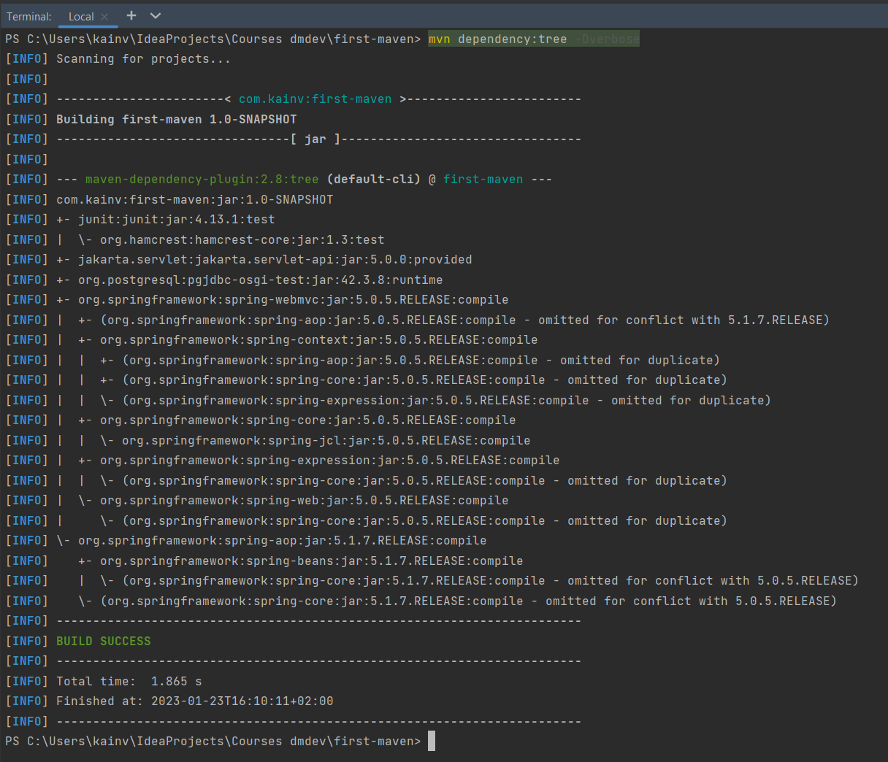
В данном случае spring-beans уже не опущен, приложение берёт именно версию более старшую потому что
исключили более старую из spring=webmvc. Таким образом, при помощи
<exclusions></exclusions>
можно исключать транзитивные зависимости когда происходит конфликт.
Тэг <optional></optional>
По умолчанию, в нём есть два значения: true & false. По умолчанию false,
Добавим ещё одну зависимость:
<dependency>
<groupId>mysql</groupId>
<artifactId>mysql-connector-java</artifactId>
<version>8.0.23</version>
<scope>runtime</scope>
<optional>true</optional>
</dependency>
Получается, что другой проект, который будет подключать в качестве зависимости наш first-maven -
транзитивно должен был бы подтянуть postgres & mysql-connector, но он этого делать не будет потому
что <optional>true</optional> установлен в true, но он должен выбрать одну из
этих опционных зависимостей. Т.е., мы зависим либо от postgres, либо от mysql. И тот, кто подключает наш проект
в качестве зависимостей должен сам для себя выбрать, какая из этих зависимостей ему нужна в качестве
транзитивных явно прописав в своем теге <dependencies></dependencies>. На практике лучше
<optional>true</optional> не использовать. Просто закомментируем в POM'е.
Maven. 9. Dependency scope
Кроме таких атрибутов как
<groupId></groupId>
<artifactId></artifactId>
<version></version>
Существует ещё атрибут <scope></scope>. Из есть пять разных вариантов:
-
<scope>compile</scope> - идёт по умолчанию в наши зависимости, даже если не
указываем явно. Он говорит о том, что данная зависимость нужна для компиляции проекта. Т.е. без этой
зависимости никак не сможем скомпилировать проект. Другими словами говоря, если соберём приложение в .jar
файл, то этот файл будет полностью зависеть от зависимости другой, которая помечена как compile.
Без неё он работать не будет.
-
<scope>provided</scope> (jakarta.servlet-api следует использовать не compile,
а provided) - это означает, что эта зависимость будет предоставлена кем-то другим. В данном случае
эта зависимость лежит в директории lib нашего Tomcat, а т.к. мы будем использовать веб-приложение, потому
что
эта зависимость нужна только для веб-приложений, то, следовательно, она будет в Tomcat'e и не нужно будет
добавлять в CLASSPATH проекта. Поэтому это provided. Естественно, она добавляется для того чтобы
могли
обращаться к нашим классам из FirstServlet. В противном случае без provided зависимости просто не
будет виден HttpServlet.
-
<scope>runtime</scope> прекрасный пример - драйвер в JDBC. (Подключим драйвер для
postgres в commit maven 9). Т.е., во время компиляции нам не нужен этот драйвер (зависимость) вообще, только
во время выполнения (когда получили соединения). Проще говоря, используем когда во время компиляции
не надо, а во время runtime нужно.
-
<scope>system</scope> - не следует никогда использовать - означает, что
указываем зависимость, который лежит у нас на компьютере. Т.е., по сути указываем путь к .jar, который лежит
на компьютере (путь указывается тэгом <systemPath>). Следовательно, её не рекомендуется
использовать вообще.
-
<scope>test</scope> - этот скоуп говорит о том, что эта зависимость нужна только
во время выполнения наших тестов. В нашу результирующую .jar она не должна попасть так же как и
provided. Только отличие в том, что provided нужна для выполнения и жизнедеятельности проекта,
но будет предоставлена каким-то другим приложением. В случае же с test - она нам в принципе не нужна.
Только тогда, когда выполним тесты и проверим, что приложение работает успешно.
Чтобы посмотреть все зависимости, которые наследуются от других pom или модулей, если специальный плагин. Для
этого в терминале обращаемся к плагину. Посмотрим какие есть goal у этого плагина:
mvn dependency:help. У него много goal, но нас будут интересовать два из них:
-
dependency:analyze - анализирует зависимости
-
dependency:tree - билдит всю иерархию зависимостей вместе с зависимостью нашей зависимости
и т.д. Называют ещё транзитивной зависимостью.
Поэтому можем набрать mvn dependency:analyze и увидим статистику по зависимостям и принимать
решение:
что можно убрать, что оставить.
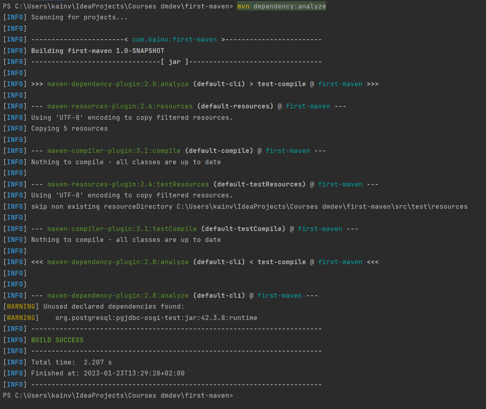
В данном случае видим, что есть зависимость, которая никогда не используется: org.postgresql. Видим это в
консоли, где строка отмечена [WARNING]. Таким образом, можем
анализировать зависимости и определять, всё ли у нас хорошо с POM.
Посмотрим ещё дерево зависимостей: mvn dependency:tree
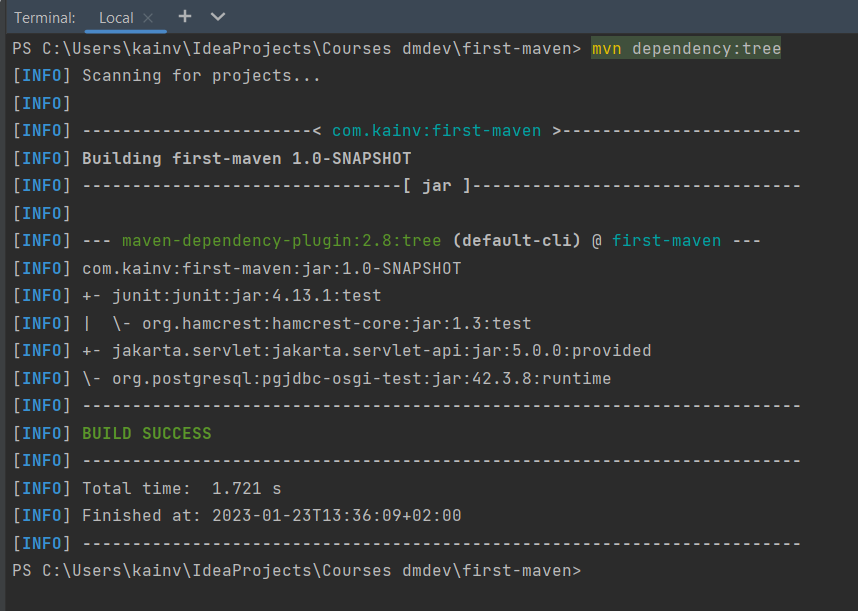
Видим, что есть проект, который собирается в .jar, где видим groupId, artifactId, version:
[INFO] com.kainv:first-maven:jar:1.0-SNAPSHOT
И он зависит от трёх других:
[INFO] +- junit:junit:jar:4.13.1:test
[INFO] | \- org.hamcrest:hamcrest-core:jar:1.3:test
[INFO] +- jakarta.servlet:jakarta.servlet-api:jar:5.0.0:provided
[INFO] \- org.postgresql:pgjdbc-osgi-test:jar:42.3.8:runtime
В свою очередь, junit зависит от
[INFO] | \- org.hamcrest:hamcrest-core:jar:1.3:test
Такая зависимость называется транзитивной. Мы её получили неявно.
Maven. 8. Dependency management
Познакомимся с одним из основных тегов - <dependencies></dependencies>. Этот тег
используется нами, а точнее maven проектами в том случае, когда нам необходимо привнести новую зависимость в
проект. Т.е. по другому говоря, .jar файлы.
В тэге <dependencies></dependencies> можем указывать только тег <dependency>
</dependency>. Таким образом можем подключать множество зависимостей и они будут в CLASSPATH нашего
проекта. Для подключения зависимостей нужно подключать уникальный идентификатор, который состоит из трёх
основных
элементов:
<groupId></groupId>
<artifactId></artifactId>
<version></version>
Например, если хотим подключить зависимости сервлетов, то пишем:
<dependencies>
<dependency>
<groupId>jakarta.servlet</groupId>
<artifactId>jakarta.servlet-api</artifactId>
<version>5.0.0</version>
</dependency>
</dependencies>
Но когда мы их подключили, перейдя в класс и захотим написать сервлет, то в CLASSPATH не будет видна
зависимость.
Для этого мы должны "подтянуть" эту зависимость. Подтянуть - означает скачать зависимость в директорию
локального репозитория под названием .m2, а именно .m2/repository. Этот репозиторий хранится
локально и он является общим для всего локального компьютера и будет видна во всех проектах.
Поэтому, переходим в эту директорию. Это дефолтная репозитория локального репозитория. В ней есть директория
/repository. Именно .m2/repository используется maven'ом для скачивания сторонних зависимостей
из удалённого репозитория. Перейдя в этот репозиторий можно посмотреть все зависимости, которые уже скачаны.
Что у нас получается:
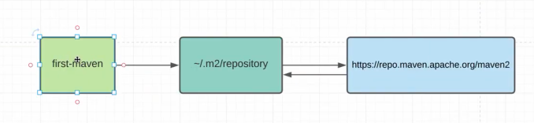
У нас есть проекты (first-maven в данном случае) и все они ищут зависимости локально на машине в директории
пользователя ~/.m2/repository. Если в этой директории не нашлось зависимости, то maven идёт в удаленный
репозиторий, который прописан в super pom:
https://repo.maven.apache.org/maven2. И оттуда, если нашлись зависимости, то скачиваются в локальный
репозиторий и можем использовать в проекте. В следующий раз уже не пойдёт в удалённый репозиторий, если уже
будет
выкачано локально.
В случае с нашим примером с jakarta: в .m2/repository должна лежать директория jakarta, в которой лежит
директория servlet. Если туда зайдём, то увидим jakarta.servlet-api, а внутри неё будет директория
5.0.0, потому-что версий может быть множество. И уже внутри этой директории будет лежать зависимость.
Перейдя в зависимость можно увидеть -sources.jar (отдельно jar с исходными кодами, по умолчанию maven
всегда их подхватывает), дальше видим саму .jar с зависимостями скомпилированными и ещё .pom. Ещё есть .sha1, но
оно сейчас не нужно, потому что используется для взаимодействия с удалёнными репозиториями. Теперь можем
споконо использовать .jar в нашем проекте. Естественно, .m2/repository можно переписать, но она уже
находится не в super pom, в настройках нашего maven: ${maven}/conf/settings.xml. Именно в этом
settings.xml можем поправить дефолтные репозитории, если захотим. Но лучше этого не делать.
Мы увидили её в локальном репозитории, но почему-то у нас всё ещё сервлет не видит класс HttpServlet. Все потому
что должны ещё заимпортить .jar в наш проект из нашего локального репозитория.
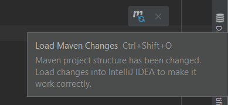
Более того, теперь мы видим все зависимости, которые нам подключил maven из локального репозитория. Таким
образом, мы очень легко и просто можем подключать зависимости в наш проект.
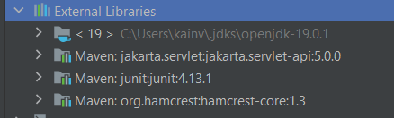
Maven. 7. Super POM - битый
Super POM - это по сути суперкласс, от которого наследуются другие классы. Т.е., super pom содержит XML
атрибуты, которые билдятся по умолчанию даже если не указываем их в своем собственном pom. Через команду
mvn help:effective-pom.
Мы можем задавать только конкретные теги и атрибуты. Не можем придумать какие-то свои.
В super POM есть по дефолту все директории которые нам необходимы.